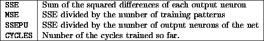
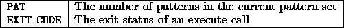
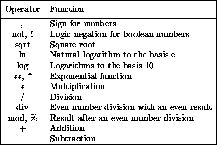

An expression is usually a formula which calculates a value. An expression could be a complex mathematical formula or just a value. Expressions include:
3
TRUE
3 + 3
17 - 4 * a + (2 * ln 5) / 0.3
The value or the result of an expression can be assigned to a variable. The following operators exist, ordered by priority from top to bottom:


If more than one expression occurs in a line the execution of expressions starts at the left and proceeds towards the right. The order can be changed with parentheses `(' `)'.
The type of an expression is determined at run time and is set with the operator except in the case of integer number division, the modulo operation, the boolean operation and the compare operations.
If two integer values are multilpied, the result will be an integer value. But if an integer and a float value are multilpied, the result will be a float value. If one operator is of type string, then all other operators are transformed into strings. Partial expressions are calculated before the transformation takes place:
a := 5 + " plus " + 4 + " is " + ( 8 + 1 )
is transformed to the string:
5 plus 4 is 9
Please note that if the user decides to use operators such as sqrt, ln, log or the exponential operator, no parentheses are required because the operators are not function calls:

However parentheses are possible and some times even necessary:
sqrt (9 + 16) ln (2^16) log (alpha * sqrt tau)